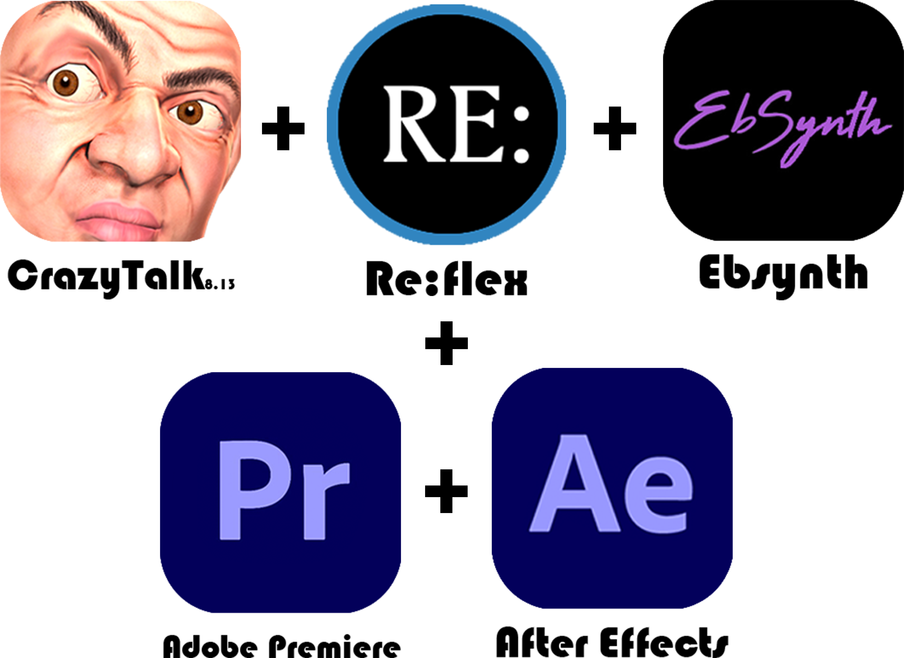

Pipeline
Text
Text
ChatGPT generated the content and storyboard based on the specific conditions that humans restrained. Then, the final version of the story script and storyboard was output after rough edits by humans (such as deleting redundant or unnecessary sentences).
Images
Images
Copied the storyboard content into Midjourney as prompts to generate scene and character images. Then, used the "Expand Image", "Erase and Replace", and "Remove Background" features provided by Runway to change the image ratio, edit image contents, and extract goal elements. Finally, imported AI-edited images into Photoshop for fine-tuning and outputting the desired final image.

Scene Animation
Scene Animation
3D Scene Animation with Depth Map: Imported edited scene images into VoluMax7 to generate the depth map with just one click and then used the animation controller to animate 3D depth scene animation in Adobe After Effects (AE). Afterward, used Runway's "Super Slow Motion" feature to add frames to some of the scene videos to enhance the animation quality.

Character Animation
Character Animation
CrazyTalk 8.13 was used to animate the character's lips and facial expressions. For other facial expression animation, Re:Flex allowed to wrap and morph character facial expressions by drawing on the different character facial images with AE's own splines, while Adobe Premiere (PR) was used to composite all character facial animation with body movements. Ebsynth was used to transfer the style of the character images onto the action source footage to make character action animation. Meanwhile, for some specific scenes, their green screen backgrounds were added by Runway's "Add Green Background" feature as one of the preparations for further materials integration. Adobe After Effects (AE) was used to create additional auxiliary animations such as the character's body movements.

Audio
Audio
AI-generated background music that contains customized music length, tempo, composition, instruments, and the genre was generated by Tianyin and SOUNDRAW. Freedsound was used to select copyright-free sound effects that appear in the demo. Azure's TTS function, along with its high degree of customizability for voice tone and pitch, made the narration and actor lines in the demo more in line with the story's characteristics. Adobe Audition was then used to further process all audio materials, such as reducing noise and adding reverb.

Subtitle+ Materials Integration+ Final Export
Subtitle + Materials Integration + Final Export
The materials integration, subtitle addition, and scene conversion of the demo were all completed by PR (Adobe Premiere).